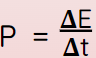

Callout
Electricity is transferred through conducting wires in transmission lines. Then electrical devices in your home, at school, and at work transform the electrical energy into another form of energy to perform a task. For example, electrical energy is converted into kinetic energy in an electric fan, sound energy in a speaker system, and into thermal energy in an electric heater.
Electrical power is the rate at which electrical energy is produced or consumed in a given time. In this lesson, we will use the terms “power” and “electrical power” interchangeably.
The equation that describes power is . Power is expressed in watts (W), and electrical devices have power ratings that vary widely.
Callout
A kilowatt hour is a useful unit of measurement for homes, but when describing the electrical energy generated by a power plant we use megawatt hours (MWh). In 2007, Ontario generated over 158 million megawatt hours of electrical energy. In general, Canadians use a lot more electrical energy than people in some other parts of the world. By comparison, residents of Chad (a country in Africa), use 9 kWh per person per year.
Calculate the power required to charge a cellphone if 740 J of energy is transferred in 1.0 min.
Calculate the energy needed by a 35 W halogen light bulb that operates for 240 h. Give your answer in both joules and kilowatt hours.
Callout
Non-renewable sources of energy are running out, and our current renewable sources are not sufficient to meet the demand.
To meet the demand for electrical energy, we can use two approaches: conservation and generating energy more efficiently. To conserve energy, newer devices are designed to use less electrical energy than older ones, and people are developing a more critical attitude to the use of electrical energy. At the same time, we have to find ways to improve the efficiency of power plants.
When considering the pros and cons of sources of energy and power plant technologies, we must consider both environmental aspects and the potential impacts on society. Environmental aspects include the ease of obtaining the source of energy, the dependability of the source of energy, the location of the power plant, atmospheric emissions, and other forms of pollution.